PSAT-자료해석 (2015-02-07 기출문제)
1. 다음 <표>는 2009년과 2010년 정부창업지원금 신청자를 대상으로 직업과 창업단계를 조사한 자료이다. 이에 대한 ＜보기＞의 설명 중 옳은 것만을 모두 고르면?
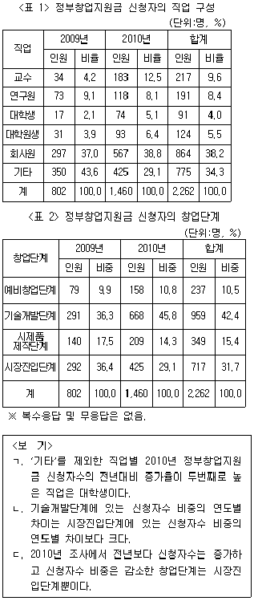
- ㄱ
- ㄴ
- ㄱ, ㄴ
- ㄴ, ㄷ
- ㄱ, ㄴ, ㄷ
(정답률: 알수없음)

2. 다음 <표>는 18세기 부여 지역의 토지 소유 및 벼 추수 기록을 나타낸 자료이다. 이에 대한 ＜보기＞의 설명 중 옳은 것만을 모두 고르면?
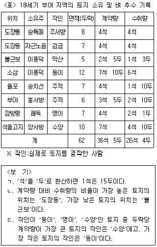
- ㄱ
- ㄴ
- ㄱ, ㄷ
- ㄴ, ㄷ
- ㄱ, ㄴ, ㄷ
(정답률: 알수없음)
3. 다음 <표>를 이용하여 <보고서>를 작성하였다. 제시된 <표> 이외에 추가로 필요한 자료만을 ＜보기＞에서 모두 고르면?
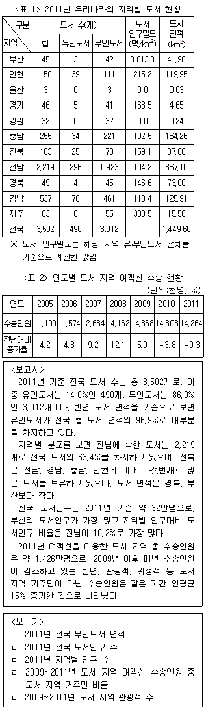
- ㄱ, ㄴ, ㄷ
- ㄱ, ㄴ, ㄹ
- ㄱ, ㄷ, ㄹ
- ㄱ, ㄷ, ㅁ
- ㄴ, ㄷ, ㅁ
(정답률: 알수없음)
4. 다음 <표>는 2014년 정부3.0 우수사례 경진대회에 참가한 총 5개 부처에 대한 심사결과 자료이다. <조건>을 적용하여 최종심사점수를 계산할 때 다음 설명 중 옳은 것은?
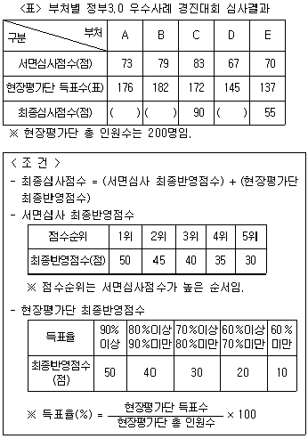
- 현장평가단 최종반영점수에서 30점을 받은 부처는 E이다.
- E만 현장평가단으로부터 3표를 더 받는다면 최종심사점수의 순위가 바뀌게 된다.
- A만 서면심사점수를 5점 더 받는다면 최종심사점수의 순위가 바뀌게 된다.
- 서면심사점수가 가장 낮은 부처는 최종심사점수도 가장 낮다.
- 서면심사 최종반영점수와 현장평가단 최종반영점수간의 차이가 가장 큰 부처는 C이다.
(정답률: 알수없음)
5. 다음은 '갑'국의 2012년 국제협력기금 조성 및 운용에 대한 <보고서>이다. 아래 <보고서>에 제시된 내용과 부합하지 않는 것은?
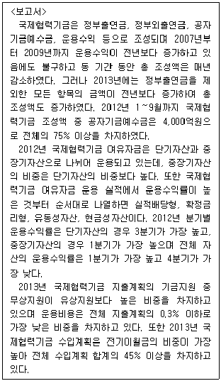
- 연도별 국제협력기금 조성액 현황(단위:백만원)
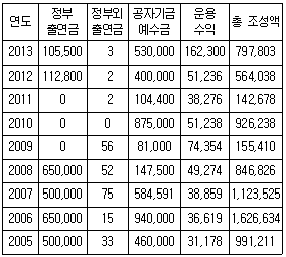
- 2012년 1~9월 국제협력기금 조성액 현황(단위:백만원)
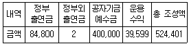
- 2012년 국제협력기금 여유자금의 자산구성 및 운용 실적
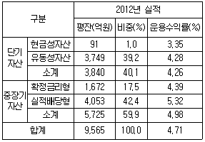
- 2012년 국제협력기금 분기별, 자산별 운용수익률 추이(단위:%)
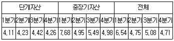
- 2013년 국제협력기금 수입 및 지출계획(단위:억원)
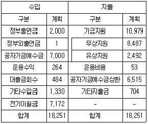
(정답률: 알수없음)
6. 다음 <표>는 '가' 대학 2013학년도 2학기 경영정보학과의 강좌별 성적분포를 나타낸 것이다. 이에 대한 ＜보기＞의 설명 중 옳은 것만을 모두 고르면?
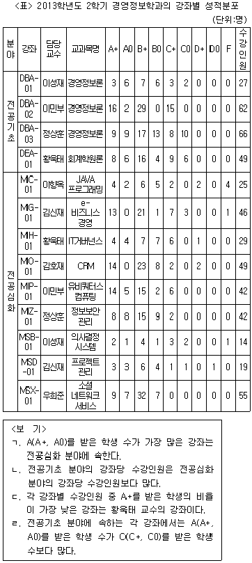
- ㄱ, ㄴ
- ㄱ, ㄷ
- ㄱ, ㄹ
- ㄴ, ㄹ
- ㄷ, ㄹ
(정답률: 알수없음)
7. 다음 <표>는 2013년 복지부정 신고센터의 분야별 신고 현황과 처리결과에 관한 자료이다. 이에 대한 ＜보기＞의 설명 중 옳은 것만을 모두 고르면?
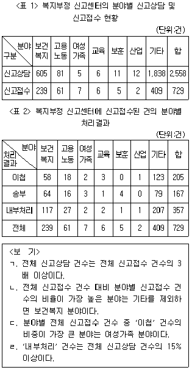
- ㄱ, ㄴ
- ㄱ, ㄷ
- ㄴ, ㄷ
- ㄱ, ㄴ, ㄹ
- ㄴ, ㄷ, ㄹ
(정답률: 알수없음)
8. 다음 <표>는 직육면체 형태를 가진 제빙기 A~H에 관한 자료이다. 이에 대한 ＜보기＞의 설명 중 옳은 것만을 모두 고르면?
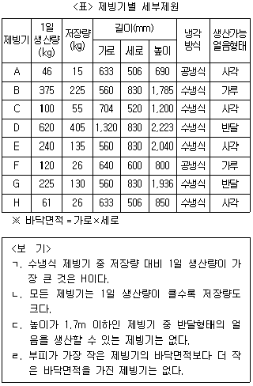
- ㄱ, ㄴ
- ㄱ, ㄷ
- ㄴ, ㄹ
- ㄱ, ㄷ, ㄹ
- ㄴ, ㄷ, ㄹ
(정답률: 알수없음)
9. 다음 <표>와 <그림>은 2008~2011년 연도별 노인돌봄종합서비스 이용 및 매출 현황을 나타낸 자료이다. 이에 대한 설명으로 옳지 않은 것은?
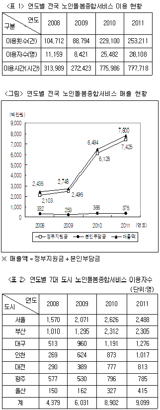
- 전국 노인돌봄종합서비스의 이용자수 대비 이용횟수가 가장 높은 연도는 2009년이다.
- 전국 노인돌봄종합서비스 매출액에서 본인부담금이 차지하는 비중은 매년 감소하였다.
- 2008년 서울과 부산의 노인돌봄종합서비스 이용자수 합은 2008년 7대 도시 노인돌봄종합서비스 이용자수 합의 절반 이상이다.
- 전국 노인돌봄종합서비스의 이용시간 당 매출액은 매년 증가하였다.
- 2010년 7대 도시 중 노인돌봄종합서비스 이용자수의 전년대비 증가율이 가장 큰 도시는 울산이다.
(정답률: 알수없음)
10. 다음 <표>는 A국 기업의 회계기준 적용에 관한 자료이다. 이에 대한 설명으로 옳지 않은 것은?
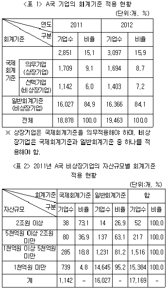
- 2011년 국제회계기준을 적용한 비상장기업의 80% 이상이 자산규모 5천억원 미만이다.
- 2011년 자산규모가 2조원 이상인 비상장기업 중, 일반회계기준을 적용한 기업 수보다 국제회계기준을 적용한 기업 수가 더 많다.
- 2012년 전체 기업 대비 국제회계기준을 적용한 기업의 비율은 2011년에 비해 증가하였다.
- 2012년 비상장기업의 수는 2011년에 비해 증가하였다.
- 2012년 비상장기업 중 국제회계기준을 적용한 비상장기업이 차지하는 비율은 전년에 비해 2%p 이상 증가하였다.
(정답률: 알수없음)
11. 다음 <표>는 25~4세 기혼 비취업여성 현황과 기혼여성의 경력단절 사유에 관한 자료이다. 이를 이용하여 작성한 그래프로 옳지 않은 것은?
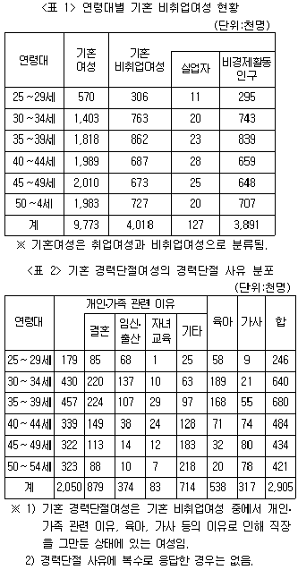
- 연령대별 기혼여성 중 경제활동인구
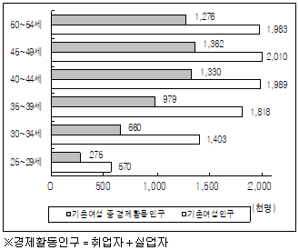
- 연령대별 기혼여성 중 비취업여성과 경력단절여성
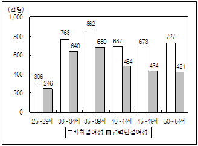
- 25~54세 기혼 취업여성의 연령대 구성비
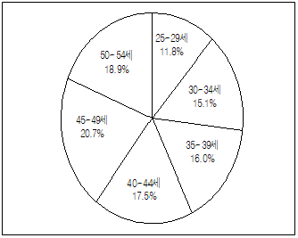
- 30~39세 기혼 경력단절여성의 경력단절 사유 분포
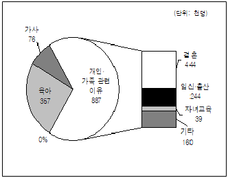
- 25~54세 기혼 경력단절여성의 연령대 구성비
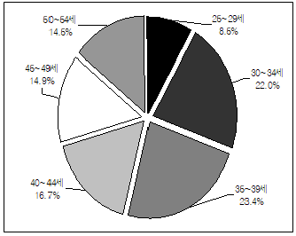
(정답률: 알수없음)
12. 다음 <보고서>를 작성하기 위해 위 <표> 이외에 추가로 필요한 자료만을 ＜보기＞에서 모두 고르면?(12번 공통지문 문제)
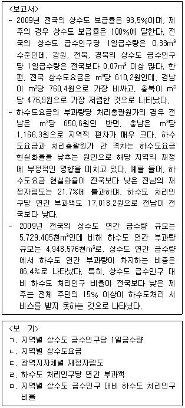
- ㄱ, ㄴ
- ㄴ, ㄷ
- ㄴ, ㄷ, ㄹ
- ㄴ, ㄹ, ㅁ
- ㄷ, ㄹ, ㅁ
(정답률: 알수없음)
13. 다음 <표>는 민속마을 현황에 관한 자료이다. <표>와 ＜보기＞에 근거하여 B, D, E에 해당하는 민속마을을 바르게 나열한 것은?(순서대로 B, D, E)
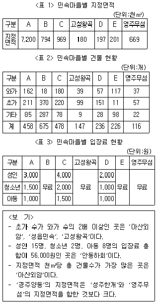
- 성읍민속, 아산외암, 성주한개
- 성읍민속, 아산외암, 경주양동
- 성읍민속, 안동하회, 경주양동
- 아산외암, 성읍민속, 성주한개
- 아산외암, 성읍민속, 안동하회
(정답률: 알수없음)
14. 다음 <표>는 2006~2010년 국내 버스운송업의 업체 현황에 관한 자료이다. <표>와 ＜보기＞를 근거로 A, B, D에 해당하는 유형을 바르게 나열한 것은?(순서대로 A, B, D)
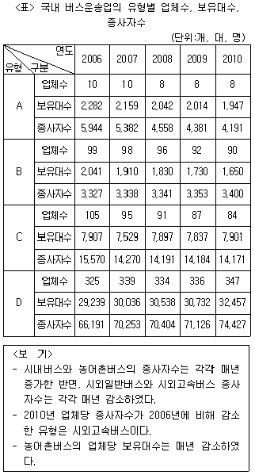
- 농어촌버스, 시외고속버스, 시내버스
- 농어촌버스, 시내버스, 시외고속버스
- 시외일반버스, 농어촌버스, 시내버스
- 시외고속버스, 시내버스, 농어촌버스
- 시외고속버스, 농어촌버스, 시내버스
(정답률: 알수없음)
15. 다음 <표>는 군별, 연도별 A소총의 신규 배치량에 관한 자료이다. 이에 대한 ＜보기＞의 설명 중 옳은 것만을 모두 고르면?
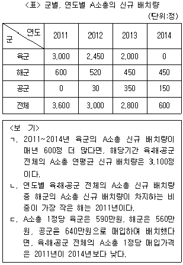
- ㄱ
- ㄴ
- ㄱ, ㄴ
- ㄱ, ㄷ
- ㄴ, ㄷ
(정답률: 알수없음)
16. 다음 <표>는 조선시대 화포인 총통의 종류별 제원에 관한 자료이다. 이에 대한 설명으로 옳지 않은 것은?
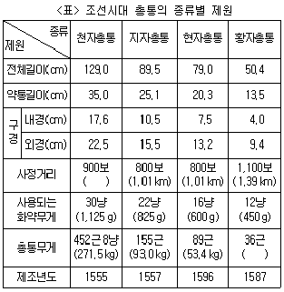
- 전체길이가 짧은 총통일수록 사용되는 화약무게가 가볍다.
- 황자총통의 총통무게는 21.0kg 이하이다.
- 제조년도가 가장 늦은 총통이 내경과 외경의 차이가 가장 크다.
- 전체길이 대비 약통길이의 비율이 가장 큰 총통은 지자총통이다.
- 천자총통의 사정거리는 1.10km 이상이다.
(정답률: 알수없음)
17. 다음 <표>는 2011년과 2012년 친환경인증 농산물의 생산 현황에 관한 자료이다. 이에 대한 설명으로 옳지 않은 것은?
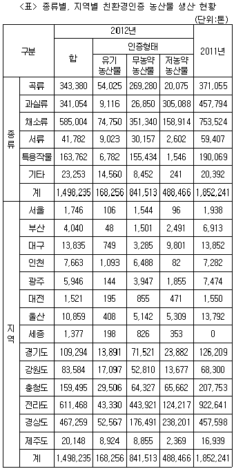
- 2012년 친환경인증 농산물 종류 중 전년대비 생산 감소량이 세 번째로 큰 농산물은 곡류이다.
- 2012년 친환경인증 농산물의 종류별 생산량에서 무농약 농산물 생산량이 차지하는 비중은 서류가 곡류보다 크다.
- 2012년 전라도와 경상도에서 생산된 친환경인증 채소류 생산량의 합은 적어도 16만 톤 이상이다.
- 2012년 각 지역내에서 인증형태별 생산량 순위가 서울과 같은 지역은 인천과 강원도 뿐이다.
- 2012년 친환경인증 농산물의 생산량이 전년대비 30% 이상 감소한 지역은 총 2곳이다.
(정답률: 알수없음)
18. 교수 A~C는 주어진 <조건>에서 학생들의 보고서를 보고 공대생 여부를 판단하는 실험을 했다. 아래 <그림>은 각 교수가 공대생으로 판단한 학생의 집합을 나타낸 벤다이어그램이며, <표>는 실험 결과에 따라 교수 A~C의 정확도와 재현도를 계산한 것이다. 이에 대한 ＜보기＞의 설명 중 옳은 것만을 모두 고르면?
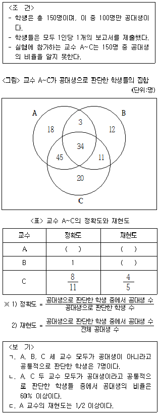
- ㄱ
- ㄴ
- ㄱ, ㄴ
- ㄴ, ㄷ
- ㄱ, ㄴ, ㄷ
(정답률: 알수없음)
19. A씨는 서울사무소에서 출발하여 정부세종청사로 출장을 가려고 한다. <그림>과 <표>는 서울사무소에서 정부세종청사까지의 이동경로와 이용 가능한 교통수단에 따른 소요시간 및 비용이다. 아래의 <조건>에 맞는 이동방법은?
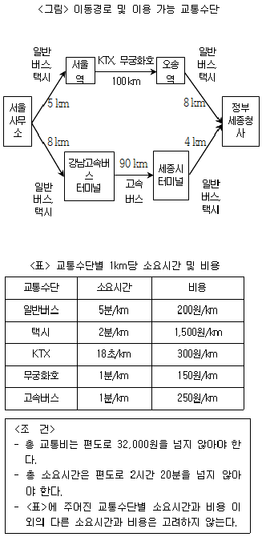
- 택시를 타고 서울역으로 이동하여 무궁화호를 타고 오송역으로 이동 후 일반버스를 탄다.
- 일반버스를 타고 서울역으로 이동하여 무궁화호를 타고 오송역으로 이동 후 일반버스를 탄다.
- 일반버스를 타고 서울역으로 이동하여 KTX를 타고 오송역으로 이동 후 일반버스를 탄다.
- 일반버스를 타고 강남고속버스터미널로 이동하여 고속버스를 타고 세종시 터미널로 이동 후 택시를 탄다.
- 택시를 타고 강남고속버스터미널로 이동하여 고속버스를 타고 세종시 터미널로 이동 후 택시를 탄다.
(정답률: 알수없음)
20. 다음 <표>를 이용하여 <보고서>를 작성하였다. 제시된 <표> 이외에 <보고서>를 작성하기 위해 추가로 필요한 자료만을 ＜보기＞에서 모두 고르면?
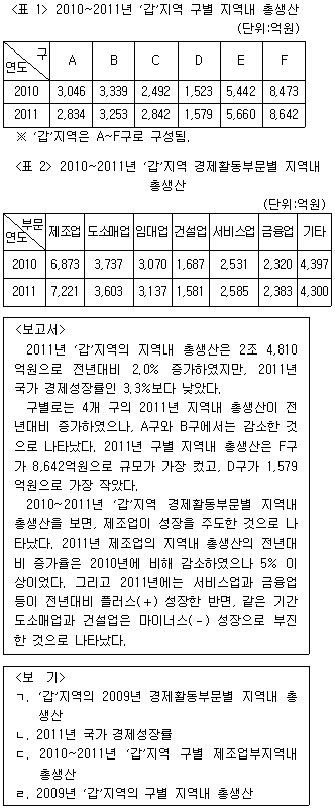
- ㄱ, ㄴ
- ㄱ, ㄷ
- ㄴ, ㄷ
- ㄴ, ㄹ
- ㄷ, ㄹ
(정답률: 알수없음)
21. 다음 <표>는 2011~2013년 개인정보분쟁조정위원회에 접수된 개인정보에 대한 분쟁사건 접수유형 및 조정결정 현황에 관한 자료이다. 이에 대한 설명으로 옳지 않은 것은?
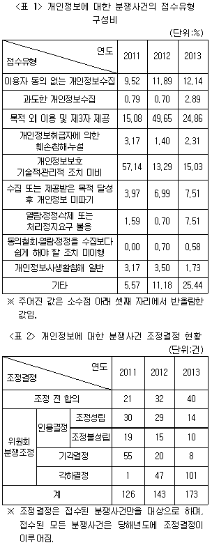
- '목적 외 이용 및 제3자 제공' 건수는 2012년이 2013년의 2배 이하이다.
- '기타'를 제외한 접수유형 중 '이용자 동의 없는 개인정보수집' 건수는 매년 세 번째로 많다.
- '위원회 분쟁조정' 대비 '인용결정' 건수의 비율은 매년 하락하였다.
- 2011년 '인용결정' 대비 '조정불성립' 건수의 비율은 2012년 '위원회 분쟁조정' 대비 '각하결정' 건수의 비율보다 낮다.
- '조정 전 합의' 건수가 분쟁사건 조정결정에서 차지하는 비율은 '목적 외 이용 및 제3자 제공'이 접수유형에서 차지하는 비율보다 매년 낮다.
(정답률: 알수없음)
22. 다음 <표>는 수자원 현황에 대한 자료이다. 이를 바탕으로 작성한 <보고서>의 내용 중 옳은 것만을 모두 고르면?
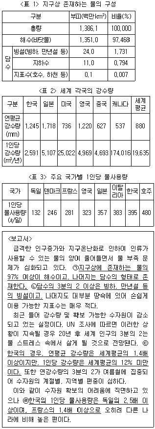
- ㄱ, ㄴ
- ㄱ, ㄷ
- ㄷ, ㄹ
- ㄱ, ㄴ, ㄹ
- ㄴ, ㄷ, ㄹ
(정답률: 알수없음)
23. 다음 <그림>은 2003년과 2013년 대학 전체 학과수 대비 계열별 학과수 비율과 대학 전체 입학정원 대비 계열별 입학정원 비율을 나타낸 자료이다. 이에 대한 설명으로 옳은 것은?
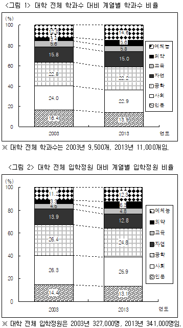
- 2013년 인문계열의 입학정원은 2003년 대비 5% 이상 감소하였다.
- 계열별 입학정원 순위는 2003년과 2013년에 동일하다.
- 2003년 대비 2013년 학과수의 증가율이 가장 높은 계열은 예체능이다.
- 2013년 예체능, 의약, 교육 계열 학과수는 2003년에 비해 각각 증가하였으나 나머지 계열의 학과수의 합계는 감소하였다.
- 2003년과 2013년을 비교할 때, 계열별 학과수 비율의 증감방향과 계열별 입학정원 비율의 증감방향은 일치하지 않는다.
(정답률: 알수없음)
24. 다음 <표>와 <그림>은 15~19세기 조선시대 문과급제자의 급제시기와 당시 거주지를 조사한 자료이다. 이를 바탕으로 작성한 <보고서>의 내용으로 옳지 않은 것은?
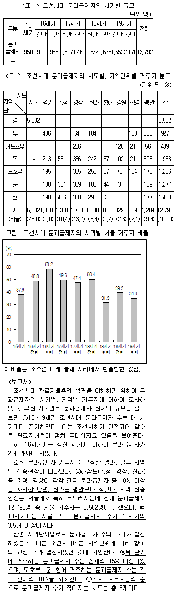
- ㄱ
- ㄴ
- ㄷ
- ㄹ
- ㅁ
(정답률: 알수없음)
25. 다음 <표>는 통근 소요시간에 따른 5개 지역(A~E) 통근자 수의 분포를 나타낸 자료이다. 이에 대한 ＜보기＞의 설명 중 옳은 것만을 모두 고르면?
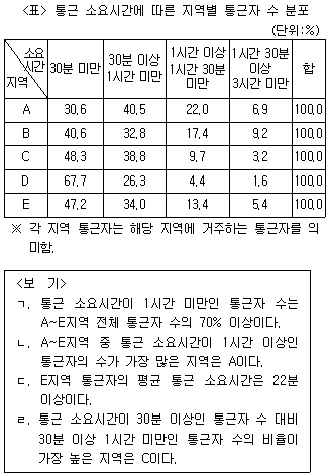
- ㄱ, ㄴ
- ㄱ, ㄷ
- ㄱ, ㄹ
- ㄴ, ㄷ
- ㄷ, ㄹ
(정답률: 알수없음)
26. 다음 <표>는 2006~2010년 A국의 가구당 월평균 교육비 지출액에 대한 자료이다. 이에 대한 설명으로 옳은 것은?
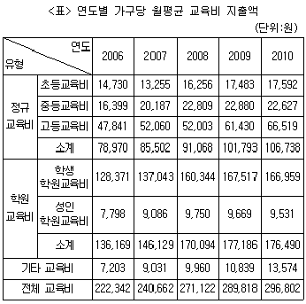
- 2007~2010년 '전체 교육비'의 전년대비 증가율은 매년 상승하였다.
- '전체 교육비'에서 '기타 교육비'가 차지하는 비중이 가장 큰 해는 2009년이다.
- 2008~2010년 '초등교육비', '중등교육비', '고등교육비'는 각각 매년 증가하였다.
- '학원교육비'의 전년대비 증가율은 2009년이 2008년보다 작다.
- '고등교육비'는 매년 '정규교육비'의 60% 이상이다.
(정답률: 알수없음)
27. 다음 <표>는 2012년 5월 공항별 운항 및 수송현황에 관한 자료이다. <표>와 ＜보기＞를 근거로 하여 A~E에 해당하는 공항을 바르게 나열한 것은?(순서대로 A, B, C, D, E)
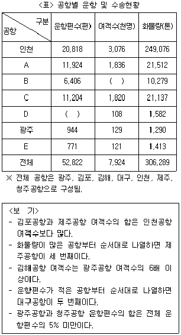
- 김포, 김해, 제주, 대구, 청주
- 김포, 김해, 제주, 청주, 대구
- 김포, 청주, 제주, 대구, 김해
- 제주, 청주, 김포, 김해, 대구
- 제주, 김해, 김포, 청주, 대구
(정답률: 알수없음)
28. <표>와 <그림>의 내용을 바탕으로 작성한 <보고서>의 설명 중 옳은 것만을 모두 고르면?(29번 공통지문 문제)
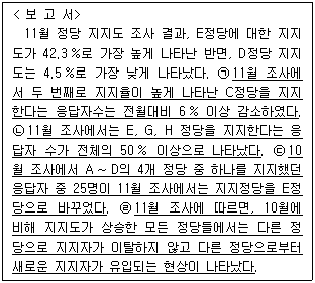
- ㄱ, ㄴ
- ㄱ, ㄷ
- ㄴ, ㄹ
- ㄷ, ㄹ
- ㄱ, ㄴ, ㄷ
(정답률: 알수없음)
29. 다음 <그림>은 우리나라 광역지자체 간 산업연관성을 나타낸 자료이다. 이에 대한 ＜보기＞의 설명 중 옳은 것만을 모두 고르면?
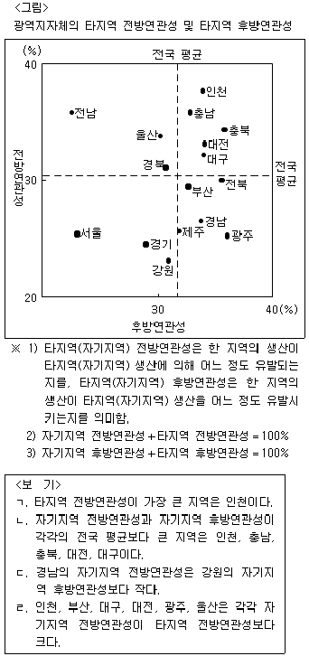
- ㄱ, ㄴ
- ㄱ, ㄷ
- ㄱ, ㄹ
- ㄴ, ㄷ
- ㄷ, ㄹ
(정답률: 알수없음)
30. 다음 <표>는 일제강점기 어느 해의 부별, 국적별 인구분포를 나타낸 자료이다. 이에 대한 설명으로 옳은 것은?
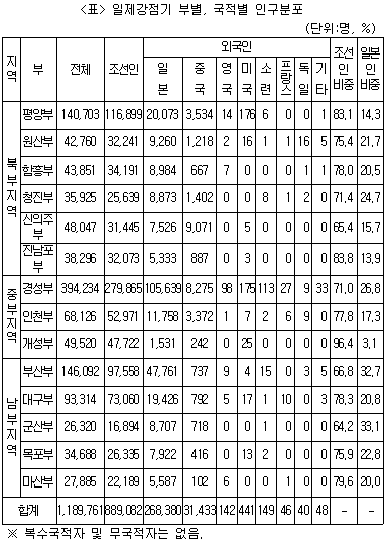
- 각 부에서 조선인과 일본인을 합한 인구는 해당 부 전체 인구의 90%를 넘는다.
- 외국인 수가 세 번째로 많은 부는 대구부이다.
- 함흥부와 청진부는 외국인 국적 종류 수가 같다.
- 각 부의 전체 인구에서 일본인을 제외한 외국인이 차지하는 비중이 가장 큰 부는 일본인 수가 가장 적은 부이다.
- 지역별로 보면, 가장 많은 수의 중국인이 거주하는 지역은 북부지역이고, 가장 많은 수의 일본인이 거주하는 지역은 남부지역이다.
(정답률: 알수없음)
31. 다음 <그림>과 <표>는 '갑' 도시 지하철의 역간 거리와 출발역에서 도착역까지의 소요시간에 관한 자료이다. 이에 대한 ＜보기＞의 설명 중 옳은 것만을 모두 고르면?
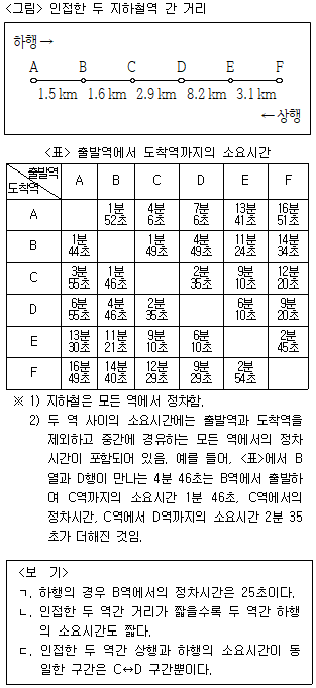
- ㄱ
- ㄴ
- ㄱ, ㄴ
- ㄴ, ㄷ
- ㄱ, ㄴ, ㄷ
(정답률: 알수없음)
32. 다음 <표>는 '갑'국 택시요금체계의 변화와 승객 S의 연도별 택시이용횟수에 대한 자료이다. 이에 대한 ＜보기＞의 설명 중 옳은 것만을 모두 고르면?
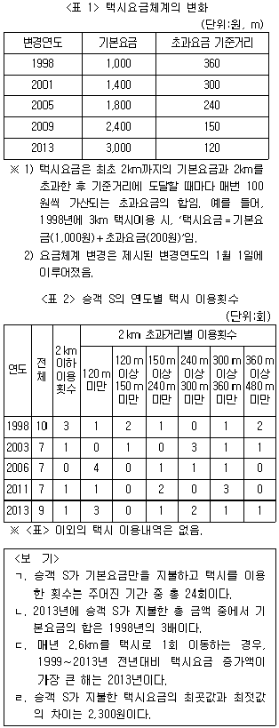
- ㄱ, ㄴ
- ㄱ, ㄹ
- ㄴ, ㄷ
- ㄱ, ㄷ, ㄹ
- ㄴ, ㄷ, ㄹ
(정답률: 알수없음)
33. 다음 <표>와 <그림>은 '갑'공장의 재료 매입 실적 및 운반비 관련 자료이다. 이를 이용하여 톤당 산지가격을 계산할 때 A~E 중 톤당 산지가격이 가장 높은 재료는?
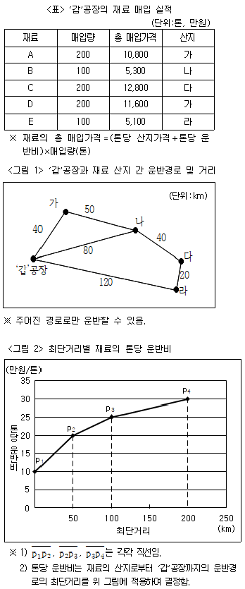
- A
- B
- C
- D
- E
(정답률: 알수없음)
34. 다음 <표>는 어느 대학의 재학생 및 교원 현황에 관한 자료이다. <환산교수 수 산정 규정>을 적용하여 이 대학의 2014학년도 2학기 환산교수 1인당 학생 수를 소수점 아래 첫째 자리까지 구하면?
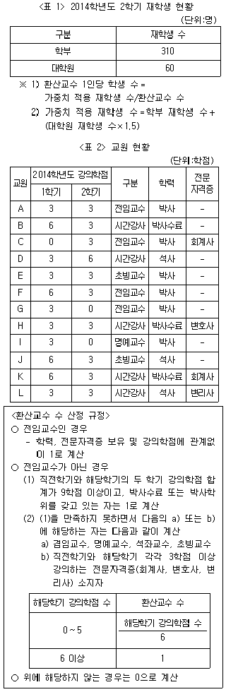
- 40.0
- 45.0
- 50.0
- 53.3
- 57.1
(정답률: 알수없음)
35. 다음 <그림>은 A산림경영구의 벌채 예정 수종 현황에 대한 자료이다. 이에 대한 ＜보기＞의 설명 중 옳은 것만을 모두 고르면?
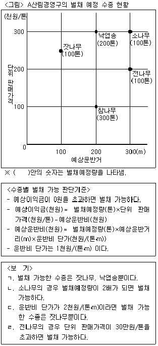
- ㄱ, ㄴ
- ㄱ, ㄷ
- ㄴ, ㄹ
- ㄷ, ㄹ
- ㄱ, ㄷ, ㄹ
(정답률: 알수없음)
36. 다음 <표>와 <그림>은 A시 30대와 50대 취업자의 최종학력, 직종 분포이다. 이에 대한 설명으로 옳은 것은?
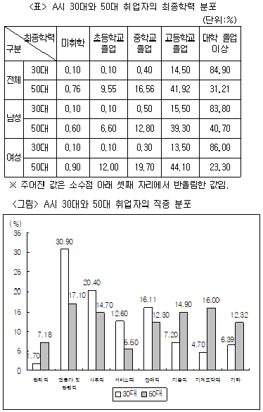
- 서비스직 취업자 수는 30대가 50대보다 많다.
- 30대 기능직 취업자 수가 최종학력이 고등학교 졸업인 30대 남성 취업자 수보다 많다.
- 모든 30대 판매직 취업자의 최종학력은 고등학교 졸업 이하이다.
- 최종학력이 중학교 졸업인 50대 취업자 수가 50대 기계조작직 취업자 수보다 적다.
- 50대 취업자 수는 남성이 여성보다 적다.
(정답률: 알수없음)
37. 다음 <표>는 창호, 영숙, 기오, 준희가 홍콩 여행을 하며 지출한 경비에 관한 자료이다. 지출한 총 경비를 네 명이 동일하게 분담하는 정산을 수행할 때 <그림>의 A, B, C에 해당하는 금액을 바르게 나열한 것은?(순서대로 A, B, C)
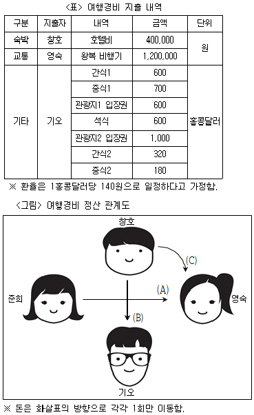
- 540,000원, 20,000원, 120,000원
- 540,000원, 20,000원, 160,000원
- 540,000원, 40,000원, 100,000원
- 300,000원, 40,000원, 100,000원
- 300,000원, 20,000원, 120,000원
(정답률: 알수없음)
38. 아래 <그림>은 마을 A~E 간의 가능 이동로를 보여주며, <표>는 주어진 <조건>에 따라 '갑'이 매 회차 이동 후 각 마을에 숨어있을 확률을 구한 자료이다. 이에 대한 ＜보기＞의 설명 중 옳은 것만을 모두 고르면?
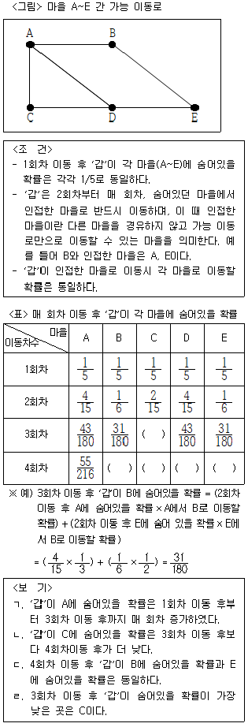
- ㄱ, ㄴ
- ㄱ, ㄷ
- ㄴ, ㄷ
- ㄴ, ㄹ
- ㄷ, ㄹ
(정답률: 알수없음)
- 2009년과 2010년에 정부창업지원금을 신청한 사람들 중 가장 많은 직종은 "서비스업"이었다. (ㄴ)
- 따라서, "ㄱ, ㄴ"이 모두 옳은 설명이다.